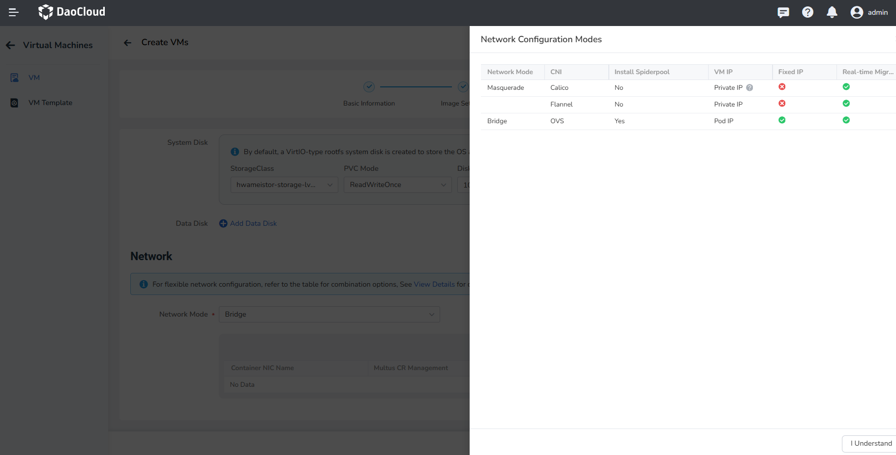
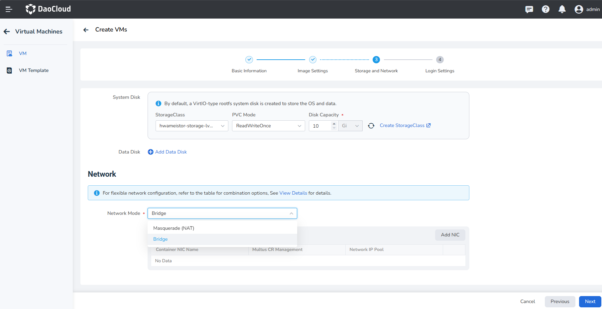
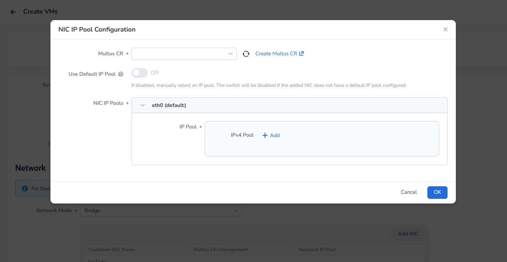

Create Virtual Machine¶
This article will explain how to create a virtual machine using two methods: image and YAML file.
Virtual machine, based on KubeVirt, manages virtual machines as cloud native applications, seamlessly integrating with containers. This allows users to easily deploy virtual machine applications and enjoy a smooth experience similar to containerized applications.
Prerequisites¶
Before creating a virtual machine, make sure you meet the following prerequisites:
- Expose hardware-assisted virtualization to the user operating system.
- Install virtnest-agent on the specified cluster; the operating system kernel version must be 3.15 or higher.
- Create a namespace and user.
- Prepare the image in advance. The platform comes with three built-in images (as shown below). If you need to create your own image, refer to creating from an image with KubeVirt.
- When configuring the network, if you choose to use the Passt network mode, you need to upgrade to Version 0.4.0 or higher.
Create image¶
Follow the steps below to create a virtual machine using an image.
-
Click Container Management on the left navigation bar, then click Virtual Machines to enter the VM page.

-
On the virtual machine list page, click Create VMs and select Create with Image.

-
Fill the basic information, image settings, storage and network, login settings, and click OK at the bottom right corner to complete the creation.
The system will automatically return to the virtual machine list. By clicking the ┇ button on the right side of the list, you can perform operations such as power on/off, restart, clone, update, create snapshots, console access (VNC), and delete virtual machines. Cloning and snapshot capabilities depend on the selected StorageClass.

Basic Information¶
In the Create VMs page, enter the information according to the table below and click Next.

- Name: Up to 63 characters, can only contain lowercase letters, numbers, and hyphens ( - ), and must start and end with a lowercase letter or number. The name must be unique within the namespace, and cannot be changed once the virtual machine is created.
- Alias: Allows any characters, up to 60 characters.
- Cluster: Select the cluster to deploy the newly created virtual machine.
- Namespace: Select the namespace to deploy the newly created virtual machine. If the desired namespace is not found, you can create a new namespace according to the prompts on the page.
- Label/Annotation: Select the desired labels/annotations to add to the virtual machine.
Image Settings¶
Fill in the image-related information according to the table below, then click Next.

-
Image Source: Supports three types of sources.
- Registry: Images stored in the container registry. You can select images from the registry as needed.
- HTTP: Images stored in a file server using the HTTP protocol, supporting both HTTPS:// and HTTP:// prefixes.
- Object Storage (S3): Virtual machine images obtained through the object storage protocol (S3). For non-authenticated object storage files, please use the HTTP source.
-
The following are the built-in images provided by the platform, including the operating system, version, and the image URL. Custom virtual machine images are also supported.
Operating System Version Image Address CentOS CentOS 7.9 release-ci.daocloud.io/virtnest/system-images/centos-7.9-x86_64:v1 Ubuntu Ubuntu 22.04 release-ci.daocloud.io/virtnest/system-images/ubuntu-22.04-x86_64:v1 Debian Debian 12 release-ci.daocloud.io/virtnest/system-images/debian-12-x86_64:v1 -
Image Secret: Only supports the default (Opaque) type of key, for specific operations you can refer to Create Secret.
The built-in image storage in the bootstrap cluster, and the container registry of the bootstrap cluster is not encrypted, so when selecting the built-in image, there is no need to select a secret.
Note
The hot-plug configuration for CPU and memory requires virtnest v0.10.0 or higher, and virtnest-agent v0.7.0 or higher.
-
Resource Config: For CPU, it is recommended to use whole numbers. If a decimal is entered, it will be rounded up. The hot-plug configuration for CPU and memory is supported.
-
GPU Configuration: Enabling GPU functionality requires meeting certain prerequisites. For details, refer to Configuring GPU for Virtual Machines (Nvidia). Virtual machines support two types of Nvidia GPUs: Nvidia-GPU and Nvidia-vGPU. After selecting the desired type, you will need to choose the proper GPU model and the number of cards.
Storage and Network¶

-
Storage:
-
Storage is closely related to the function of the virtual machine. Mainly by using Kubernetes' persistent volumes and storage classes, it provides flexible and scalable virtual machine storage capabilities. For example, the virtual machine image is stored in the PVC, and it supports cloning, snapshotting, etc. with other data.
-
System Disk: The system automatically creates a VirtIO type rootfs system disk for storing the operating system and data.
-
Data Disk: The data disk is a storage device in the virtual machine used to store user data, application data, or other non-operating system related files. Compared with the system disk, the data disk is optional and can be dynamically added or removed as needed. The capacity of the data disk can also be flexibly configured according to demand.
-
Block storage is used by default. If you need to use the clone and snapshot functions, make sure that your storage pool has created the proper VolumeSnapshotClass, which you can refer to the following example. If you need to use the live migration function, make sure your storage supports and selects the ReadWriteMany access mode.
In most cases, the storage will not automatically create such a VolumeSnapshotClass during the installation process, so you need to manually create a VolumeSnapshotClass. The following is an example of HwameiStor creating a VolumeSnapshotClass:
-
Run the following command to check if the VolumeSnapshotClass was created successfully.
-
View the created Snapshotclass and confirm that the provisioner property is consistent with the Driver property in the storage pool.
-
-
Network:
-
Network setting can be combined as needed according to the table information.
Network Mode CNI Install Spiderpool Network Cards Fixed IP Live Migration Masquerade (NAT) Calico ❌ Single ❌ ✅ Cilium ❌ Single ❌ ✅ Flannel ❌ Single ❌ ✅ Bridge OVS ✅ Multiple ✅ ✅ 
-
Network modes are divided into Masquerade (NAT) and Bridge, the latter mode need to be installed after the spiderpool component can be used.
- The network mode of Masquerade (NAT) is selected by default, using the default network card eth0.
- If the spiderpool component is installed in the cluster, you can choose the Bridge mode, and the Bridge mode supports multiple NICs.

-
Add Network Card
- Passthrough / Bridge mode supports manual addition of network cards. Click Add NIC to configure the network card IP pool. Choose the Multus CR that matches the network mode, if not, you need to create it yourself.
- If you turn on the Use Default IP Pool switch, use the default IP pool in the multus CR setting. If the switch is off, manually select the IP pool.

-
Login Settings¶
- Username/Password: Allows login to the virtual machine using a username and password.
- SSH: When selecting the SSH login method, you can bind an SSH key to the virtual machine for future login.

Create with YAML¶
In addition to creating virtual machines using images, you can also create them more quickly using YAML files.
Go to the Virtual Machine list page and click the Create with YAML button.

Click to view an example YAML for creating a virtual machine
apiVersion: kubevirt.io/v1
kind: VirtualMachine
metadata:
name: example
namespace: default
spec:
dataVolumeTemplates:
- metadata:
name: systemdisk-example
spec:
pvc:
accessModes:
- ReadWriteOnce
resources:
requests:
storage: 10Gi
storageClassName: rook-ceph-block
source:
registry:
url: >-
docker://release-ci.daocloud.io/virtnest/system-images/centos-7.9-x86_64:v1
runStrategy: Always
template:
spec:
domain:
cpu:
cores: 1
devices:
disks:
- disk:
bus: virtio
name: systemdisk-example
- disk:
bus: virtio
name: cloudinitdisk
interfaces:
- masquerade: {}
name: default
machine:
type: q35
resources:
requests:
memory: 1Gi
networks:
- name: default
pod: {}
volumes:
- dataVolume:
name: systemdisk-example
name: systemdisk-example